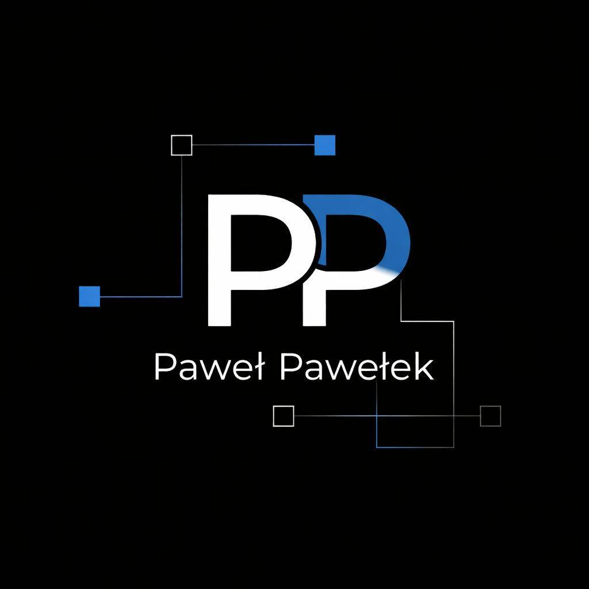

Witam na mojej stronie Paweł Pawełek
Enigma2 • IPTV • wtyczki • poradniki
Jedno miejsce dla wtyczek, konfiguracji i pomocy do Enigma2
Autorskie wtyczki, bezpośrednie pobieranie, poradniki z obrazkami, listy kanałów, Multi‑Click, czyste systemy i praktyczne polecenia terminala w jednym miejscu.

Wybierz dział
Opisy, zdjęcia, pobieranie IPK oraz prawidłowe polecenia instalacji.
PoradnikiTerminal, OSCam, Xstremity, OpenATV, instalacja image i diagnostyka.
Multi‑Click i systemyGotowe systemy Multi‑Click oraz linki do czystych image.
Listy kanałówManifest list, bukiety, AIO Panel i powiązane sekcje.
One‑Liner / FTPGotowe komendy dokładnie z pierwotnej strony i prosta instrukcja FTP.
AI ChatSzybkie pytania o Enigma2, IPTV, OSCam, picony i błędy.
Najczęściej używane
Prawidłowa komenda instalatora GitHub oraz paczka IPK.
PP Channel SyncKorekta i aktualizacja posiadanej listy kanałów z kopią bezpieczeństwa oraz raportem zmian.
Terminal / OpenWebifPoradnik krok po kroku ze zdjęciami.
Dane do OSCamWejście do WebIF OSCam, edycja oscam.server, zapis i restart.
IPTV do XstremityDodanie pliku playlists.txt przez FTP bez przepisywania z pilota.
Szybka instalacja AIO Panel
wget -q -O - https://raw.githubusercontent.com/OliOli2013/PanelAIO-Plugin/main/installer.sh | /bin/shTo jest domyślne polecenie z pierwotnej strony. Wklej je w Terminalu OpenWebif lub PuTTy i zatwierdź Enterem.